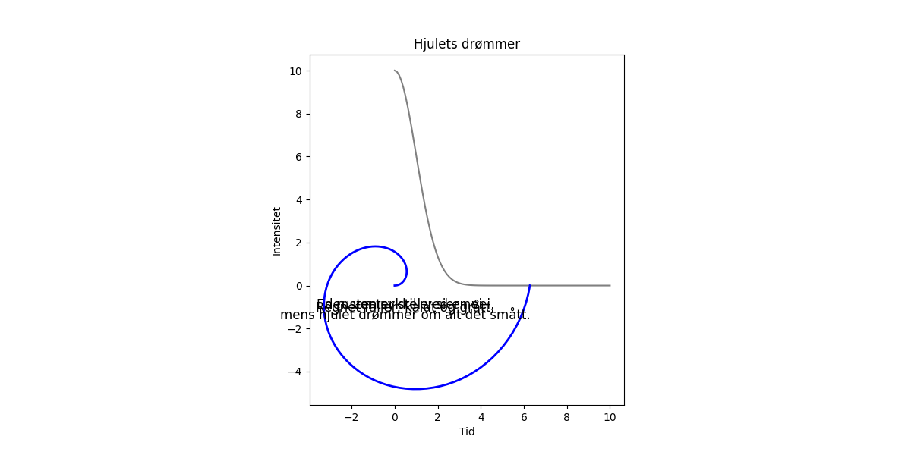

En rusten sykkel ved en vei, den venter stille, sier nei. Regnet faller, kaldt og grått, mens hjulet drømmer om alt det smått.

import matplotlib.pyplot as plt
import numpy as np
# Dikt
dikt = """
En rusten sykkel ved en vei,
den venter stille, sier nei.
Regnet faller, kaldt og grått,
mens hjulet drømmer om alt det smått.
"""
# Lag en figur og akser
fig = plt.figure(figsize=(12, 6))
ax1 = fig.add_subplot(1, 1, 1)
# Visualiser regnet som en Gauss-funksjon
x = np.linspace(0, 10, 100)
y = 10 * np.exp(-x**2 / 2)
ax1.plot(x, y, color='grey')
ax1.set_title("Regnfall")
ax1.set_xlabel("Tid")
ax1.set_ylabel("Intensitet")
# Visualiser hjulets drømmer som en spiral
theta = np.linspace(0, 2 * np.pi, 100)
r = theta # Avstand fra sentrum proporsjonell med vinkel
ax1.plot(r * np.cos(theta), r * np.sin(theta), color='blue', linewidth=2)
ax1.set_title("Hjulets drømmer")
ax1.set_aspect('equal') # Sørg for at spiralen ser ut som en spiral
# Legg til dikttekst
for line in dikt.splitlines():
ax1.text(0.5, 0.5 - 0.05 * len(line), line, ha='center', va='center', fontsize=12)
# Lagre figuren
plt.savefig(output_path)execution_ok=True fallback_used=False image_ok=True